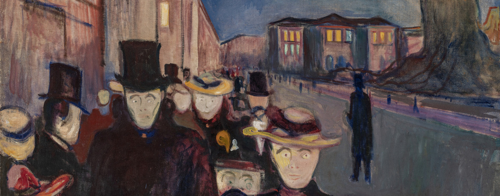

Événement 2023
Après plusieurs succès les années précédentes, nous sommes de retour avec l'Événement Culturel 2023. Plongez dans une expérience unique qui vous transportera au cœur de l'art et de la culture. Avec encore plus de culture et d'art cette événement sera unique pour les passionné d'art classique, d'art contemporain ou d'art urbain ou encore des simples curieux. Rejoignez-nous pour redécouvrir l'Événement Culturel 2023 et plonger dans un univers artistique inoubliable. oposer une programmation diversifiée qui met en valeur l'histoire de l'art et offre une immersion totale dans la créativité de nos artistes. Que vous soyez passionné d'art classique, d'art contemporain ou d'art urbain, notre événement saura vous émerveiller et susciter votre curiosité. Rejoignez-nous pour redécouvrir l'Événement Culturel 2023 et plonger dans un univers artistique inoubliable.
Exposition et événement choque de 2023
Pastel XXL
De cette intervention originale, véritable dialogue avec les œuvres présentées dans l'exposition, naîtra, au fil des semaines, un pastel géant permettant au public d’apprécier toutes les variétés et les subtilités des usages de ce médium.
Manet / Degas
Édouard Manet (1832-1883) et Edgar Degas (1834-1917) sont tous deux des acteurs essentiels de la nouvelle peinture des années 1860-80. Cette exposition qui réunit les deux peintres dans la lumière de leurs contrastes oblige à porter un nouveau regard sur leur réelle complicité. Elle montre ce que la modernité picturale eut d’hétérogène, de conflictuel, et révèle la valeur de la collection de Degas où Manet prit une place plus grande après son décès.
Adam Laloum, piano
Dans les cercles intellectuels parisiens du temps de Manet et Degas, le débat était acharné, et les brouilles parfois violentes. Schumann y était vu selon les uns et les autres comme un neurotique ou un poète de l’âme, Wagner adulé ou honni… Admirateur du Maître de Bayreuth, Fauré n’en sut pas moins se démarquer de son influence.
Témoignages des participants
"L'Événement m'a permis de redécouvrir mon amour pour l'art. Les expositions étaient fascinantes et l'atmosphère était électrisante. Je recommande vivement cette expérience à tous les amateurs d'art."
"Je suis impressionnée par la diversité des œuvres présentées lors de l'Événement Culturel 2023. C'était une expérience enrichissante qui m'a ouvert les yeux sur de nouvelles formes d'expression artistique."
"L'équipe organisatrice a fait un travail remarquable pour créer un événement aussi captivant. J'ai été émerveillé par les performances artistiques et les activités interactives. Bravo à tous les artistes et organisateurs !"
Evenement finis
L'œuvre de Munch occupe dans la modernité artistique une place charnière. Elle plonge ses racines dans le XIXe siècle pour s’inscrire pleinement dans le suivant. Plus encore, son œuvre tout entière est innervée par une vision du monde singulière lui conférant une puissante dimension symboliste qui ne se réduit pas aux quelques chefs-d'œuvre qu’il a créés dans les années 1890. Dépassant le symbolisme fin-de-siècle, Munch transcende ce mouvement au-delà de son apogée pour en faire l’épine dorsale de son œuvre, lui conférant ainsi sa grande cohérence.